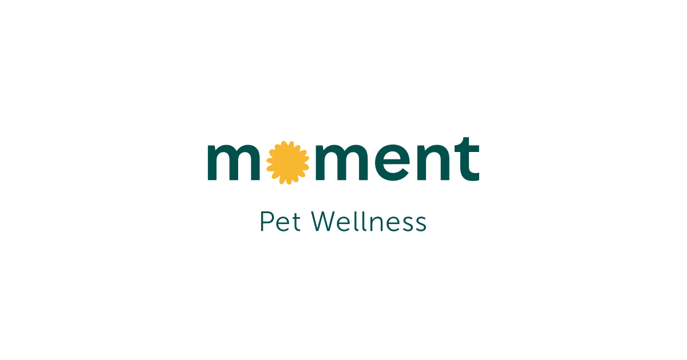

愛貓領養 Facebook社團
整合所有公立收容所送養動物之資訊，照片上及資料內均有收容所聯絡方式，有意領養可以點選底下按鍵撥打電話至各區收容所詢問，多加善用平台資源，註冊該平台後，除領養收容所動物外，也有走失協尋及刊登送養的功能。
社群網站
相關網頁
公立領養 | Wepet 寵物資訊平台
整合所有公立收容所送養動物之資訊，照片上及資料內均有收容所聯絡方式，有意領養可以點選底下按鍵撥打電話至各區收容所詢問，多加善用平台資源，註冊該平台後，除領養收容所動物外，也有走失協尋及刊登送養的功能。
整合平台
相關網頁

Moment 寵物健康照護 APP
提供獸醫線上諮詢，可以藉由線上發問，隨時隨地得到專業醫生看診，及時判斷問題嚴重程度及就醫時機，解除擔憂，也有雲端健康日誌，可使飼主養成紀錄的習慣，做好疾病預防，讓獸醫診斷更有方向，不論新手或老手，都能輕鬆上手寵物健康照護。
應用程式
相關網頁